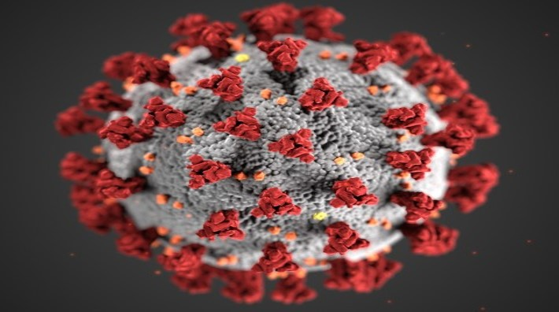

Medidas de prevención y los sintomas del covid-19
¿Qué es un coronavirus? y ¿Qué es el Covid-19?
Los coronavirus son una gran familia de virus, la mayoría de ellos inofensivos para los humanos. Se conocen cuatro tipos que causan resfriados y otros dos que causan severas infecciones en los pulmones: el Síndrome respiratorio agudo grave (SARS) y el Síndrome respiratorio por coronavirus de Oriente Medio (MERS). El nuevo coronavirus se conoce como SARS-CoV-2 por sus similitudes con el virus que causa el SARS y fue identificado a principios de enero de 2020 por científicos chinos.

Este virus causa la enfermedad llamada COVID-19. A diferencia de la influenza, no hay una inmunidad previa conocida, no hay vacuna, no hay tratamiento específico y se asume que todas las personas son susceptibles al virus. Los coronavirus son una amplia familia de virus, la mayoría inofensivos para las personas.Como todos los virus, el SARS-CoV-2 necesita que las células de los seres vivos se multipliquen.
Este virus parece apuntar a las células de los pulmones y posiblemente también a otras del sistema respiratorio. Las células infectadas producen más partículas de virus, que luego se pueden transmitir a otras personas al toser, por ejemplo.
¿Cómo se propaga?
Nuestra comprensión colectiva del virus y de la enfermedad aún está evolucionando. Sabemos que el virus se puede transmitir de persona a persona, incluso por aquellas que no presentan síntomas, por medio de gotas. Esto hace que sea mucho más difícil saber cómo se está propagando. No hay buenas estimaciones sobre qué porcentaje de infecciones son asintomáticas o con escasa sintomatología.
Las personas pueden contagiar de COVID-19 al tocar objetos o superficies contaminadas con el virus, si después tocan sus ojos, nariz o boca. También es posible el contagio si alguien respira gotas de una persona con coronavirus que tose o exhala gotas. Se recomienda estar a más de 2 metros de una persona enferma para evitar un contagio.
¿Existe alguna vacuna, medicamento o tratamiento contra la Covid‑19?
Aunque algunas soluciones de la medicina occidental o tradicional o remedios caseros pueden resultar reconfortantes y aliviar los síntomas leves de la COVID-19, hasta ahora ningún medicamento ha demostrado prevenir o curar esta enfermedad. La OMS no recomienda automedicarse con ningún fármaco, incluidos los antibióticos, para prevenir o curar la COVID-19. Sin embargo, hay varios ensayos clínicos en marcha, tanto de medicamentos occidentales como tradicionales. La OMS está coordinando la labor de desarrollo de vacunas y medicamentos para prevenir y tratar la COVID-19 y seguirá proporcionando información actualizada a medida que se disponga de los resultados de las investigaciones.
Las formas más eficaces de protegerse a uno mismo y a los demás frente al Covid‑19 son:


Lávate las manos con frecuencia.
Usa agua y jabón o un desinfectante de
manos a base de alcohol.
Usa el cubrebocas.
Mantén una distancia de seguridad con
personas que tosan o estornuden.
Síntomas que puedes presentar al contaer el Covid-19


Fiebre
Tos seca
Cansancio


Molestias y dolores
Dolor de garganta
Dolor de cabeza